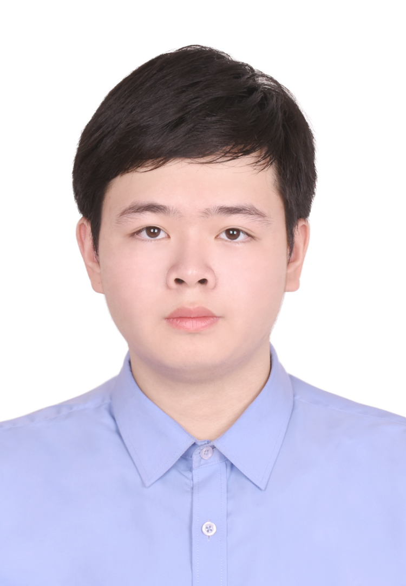

以文字为根、以影像为翼的创作者。电影阅片量 1000+、微信读书 1500+ 小时，长期在文学与电影的交叉地带打磨叙事判断力。坚持诗歌、小说与 AI 视频创作，熟悉从文字到影像的转化逻辑，擅长提炼故事核心与人物弧光。
汉语言文学 · 本科
GPA 3.7 / 5.0 · 专业前 10% · 班级前二
核心课程：创意写作（88）、摄影（89）、中国古代文学（90.5）、中国现当代文学（89）、外国文学（90）
智能光电技术应用 · 专科
广东省大学生写作大赛一等奖（省级）
廉洁征文比赛二等奖（校级）
东莞理工学院第二届"鹭声杯"创意写作大赛二等奖（校级）
二等奖学金（校级）
中文系毕业展演舞台剧编导铜奖 · 最佳男主角 · 最佳男配角
CET-4 · 计算机二级 · 普通话二级乙等 · 驾驶证 C1